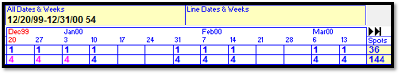

Air Time - Schedule Line Area
This section describes the schedule line area where the individual lines that make up a contract are entered. There are two parts to a schedule line: the line area, where the vehicle, daypart, and spot length information is entered; and the flights area, where the weeks and spots are entered.
To create a schedule line:
- Tab to the Vehicle field.
- Select a vehicle from the dropdown.
- Select the daypart you wish to use for this schedule line.
- Press Tab to advance to the next section, to enter the length and override information.
- Enter spots in the weekly grid area.
- Advance to the price field and enter the price.
- Tab through to the next line to complete the line entry.
The following section goes into greater detail about the different sections of the schedule line area.
Line Number
The line number gets automatically assigned, starting at line number 1.
Vehicle
The vehicle list is populated with the vehicles from the rate card that was selected in the contract header area. Color coding is used with black being used for non-package vehicles, blue for packages, and red for dormant vehicles.
Daypart
The daypart list is populated with dayparts for the selected vehicle using the rate card that was selected in the contract header area. Dayparts can be overridden (altered) on the override screen, as described below. An overridden daypart will have an asterisk to the left of it.
Length
The spot length for the chosen contract line is selected and shown in the Length (Len) field. The valid spot lengths are defined for each vehicle in Vehicle Options. When entering a new line, the spot length can be selected from the dropdown menu.
(Note: on versions prior to version 7.1, the length appears after the override boxes.)
Override Field 1
The override areas are used to add additional criteria about the line, and are labeled “Ov” (for “override”) in the column header area.
When entering a new line, select if it is a weekly or daily buy by clicking the blue “Weekly/Daily” toggle (shown below).
With a “Weekly” buy, a set number of spots are defined in the grid area/flights area for each week, and those spots will be scheduled on the valid days for that line. You can also alter the valid days by setting a day from Yes to No, but note that you can only override a daypart to have a smaller day range, not a larger day range. For example, you could change a Monday-Friday daypart to Monday-Wednesday, but you could not change it to Monday-Sunday, as that is larger than the allowed range when the daypart is Monday-Friday.
With a “Daily” buy, you will specify the number of spots to air on each day of the week, and mark whether the week should air spots or not in the flights area by toggling between “N” and “Y” (for No and Yes).
The picture below shows an example of a Daily buy override, with two spots ordered on Monday, and three spots ordered on Wednesday and Thursday.
The Start Time and End Time fields are used to alter the start and end times of the selected daypart. Enter any time overrides that are needed in the Start Time and End Time fields. The example below shows a 12m-12m daypart time that was given a time override of 6a-7p.
The High Priority field can be toggled between Yes and No, and is used by the scheduler as a tie breaker when there are two spots of equal scheduling priority and only one avail they can be booked into.
If applicable, define the lengths of Open and/or Close Billboards in the BB Open Length and BB Close Length field. These are a special type of billboard spot that gets created during log generation. This field can be bypassed if billboards are not needed for this line. (If the Billboard feature is not enabled, these two fields will not be shown.)
The Audio Type field is used to define the type of copy used for this contract line. The following choices are available (although not all systems will be configured to use all of these different options):
LC = Live commercial
LP = Live promo
RP = Agency promo
PC = Pre-recorded commercial
PP = Pre-recorded promo
RC = Agency commercial
Act 1 Lineup Values
If the “Act 1 Codes” feature is enabled in Traffic Site Options (version 7.1 and above only), then additional fields will be available in the Override popup for entering the Act 1 Lineup information.
On version 8.1 and above, because it supports the automatic import of Act 1 lineup codes and settings using the Act 1 Special Traffic System CSV file format, the Act 1 Lineup code and settings field shown above will only be visible for package lines, as they can only be manually entered for package lines (note: for standard packages that are disallowed from being edited due to settings on the standard package itself, if a default Act 1 Lineup code and settings are specified on the standard package screen for that standard package, the default Act 1 Lineup code and settings will be added to the package line automatically). When using the Act 1 Special Traffic System CSV file format to import research data, the lineup codes and settings on the import file will get set automatically, in the background, for relevant non-package lines.
If there’s a lineup code for a package (Act 1 Composite) that has been created in Act 1 and that corresponds to the package on a contract, the lineup code (and settings) can be entered here. The lineup code goes in the Act1 Lineup field on the override popup. Any settings used can also be entered. The following settings are available: Stored Times, Stored Spots, Stored Cleared %, and Daypart Filter. These are all toggle fields that can be toggled between “No” and “Yes” (by default, they are set to No). (For additional information about the Act 1 Lineup fields, click the blue “Act 1 Info” button to bring up a text box with more information about each field.) The values entered here will be exported as part of the Proposal XML export and shown on the Proposals/Contracts report.
Override Field 2
The second override field has additional settings that can be configured for the contract line. (Not all of these options will be available on every system, it depends on system settings.)
Preferred Days and Times: These are not guaranteed positions, but the scheduler will do its best to schedule the spots into the preferred days and times if used.
Region: Used with the Split Region feature to define the region.
Acquisition $’s: Use this field to define the acquisition cost (when acquisition costs are used).
Island: If set to Yes, it means no other spots can book into the avail that this spot is booked into, and the rest of the break must remain unsold.
1st Position: If set to Yes, it means this spot must get scheduled in the first position of the break.
Weekly Grid
To the right of the length and override section is the weekly grid, which displays 13 weeks across and is used to enter and view spot counts for the contract lines.
To navigate the grid, you can press Tab to advance the cursor to the next week, or hold Shift and press Tab to go back one week. The weeks displayed can be changed by clicking the black arrows. The inner black arrow will advance or go back one quarter, and the outer black arrow will advance or go back a greater amount if possible.
If the line is a weekly schedule line, the number of spots per week can be entered by simply typing the number of spots for the week in the corresponding week.

If the line is a daily schedule line (as set in the override area), the week can be toggled between Yes and No by clicking the blue toggle. Setting the week to N (No) will result in no spots for that week, and setting the week to Y (Yes) will result in the spot count and day distribution matching what was entered in the override area. The picture below shows a daily buy line.
On the Air Time tab, the total number of spots per line is tallied in the Spots field in the far right.

Day Dropdown
On version 7.1 and above, users with access to the Flights button (defined in User Options) and when the “Show day dropdown if flight button allowed” Site Options setting is checked on, are able to alter the valid days for individual weeks for weekly buys, and alter the number of spots per day for daily buys using the seven day popup that appears when editing weeks on this part of the screen. (This is similar to what can be done on the Flights screen itself, but without having to go into the Flights screen to do it.)
For weekly buys, each day of the week can be toggled to Yes or No by clicking the corresponding day. For example, if the daypart is Monday-Friday and several of the weeks are using that daypart but one week needs to be set to Monday-Thursday, click in the week and then click the Friday cell on the new popup to set Friday to No.
For daily buys, the number of spots for each day can be specified by clicking in the field for the corresponding day and typing in a number. For example, if the daypart for the line is meant to have 1 spot on Monday, 1 spot on Tuesday, and 1 spot on Wednesday for several weeks, but one of the weeks should have 2 spots on Wednesday instead of 1, click in the Wednesday cell and change it from 1 to 2.
Price
To advance from the weekly grid to the price area, press “P” and then press Tab. If settings permit, you can enter or override a rate, or enter the rate manually, or select the rate type from the rate dropdown. The following special zero dollar rate type are available: N/C (no charge), MG (makegood), Bonus, Spinoff, Package, Recapturable (a type of spot similar to a makegood that can be canceled or “recaptured”), and ADU (audience deficiency unit). These rate types are selectable on some reports, like the avails report, avails combo, spots by date and time, and spots by advertiser report, and for N/C, MG, bonus, spinoff, recapturable, and ADU, the price type name will be shown on the invoice instead of $0.
The price area can be toggled between “average price” and “total price” by clicking the blue price toggle.
Line Comments
Line comments are comments that can be entered for each individual contract line, and can be made to appear in any of the following locations by checking on the corresponding checkbox: printed contract, insertion orders report, spots and copy screen, and invoices.
To enter a line comment:
- Click in the “C” column for the line you wish to add a comment to.
- Click the dropdown arrow.
- Double click the “Comment” option.
- Enter the comment text in the text field.
- Check the checkboxes for where the comment should appear. The choices are: Proposal, Order, Insertion, Spots/Copy Screen, and Invoices.
- Press Tab to exit the Comment screen.